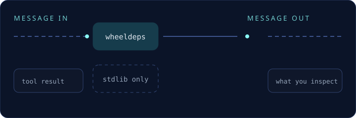

Install
consolepip install wheeldeps
Use
consolewheeldeps *.whl # what is missing
wheeldeps *.whl --json # machine readable
wheeldeps *.whl --python-version 3.10 # evaluate markers for another Python
wheeldeps *.whl --platform win32 # ... and another platform
wheeldeps *.whl --closure mypackage # what mypackage pulls from this set
pythonfrom wheeldeps import external_requirements, read_wheels
wheels = read_wheels(["app-1.0-py3-none-any.whl", "lib-2.0-py3-none-any.whl"])
for requirement in external_requirements(wheels):
print(requirement.name, requirement.specifier, requirement.marker)
What it does properly
- Name normalisation —
Zope.Interface,zope_interfaceandzope-interfaceare
the same project (PEP 503), so a provided wheel is recognised however it is spelled.
- Environment markers —
sys_platform == "win32",python_version >= "3.9",
extra == "socks", and/or/not, parentheses, in / not in. Version comparisons are numeric, so "3.12" > "3.9" behaves (a string compare gets it wrong). Point it at another interpreter with --python-version / --platform.
- Closure —
--closure NAMEwalks the requirement graph inside the set, so you can
see which wheels one package really drags in.
- No extraction — the METADATA member is read straight out of the zip, so a wheel
cannot write anything to disk while being inspected.
What it does not do
- It does not download, resolve version conflicts, or choose between candidates: it
answers "does this set satisfy these requirements", using names only.
- Specifiers are reported, not enforced (an installed
requests 1.0still counts as
providing requests>=2). Check the versions with pip check if that matters.
- Extras are parsed and kept, but a requirement on
requests[socks]is treated as a
requirement on requests, which is what a bundle needs.
Development
consolepython -m venv .venv
.venv/bin/pip install -e ".[test]"
.venv/bin/pytest
The suite covers every line of the package (pytest --cov --cov-branch), and the examples in the docstrings run as tests through --doctest-modules.
License
MIT.